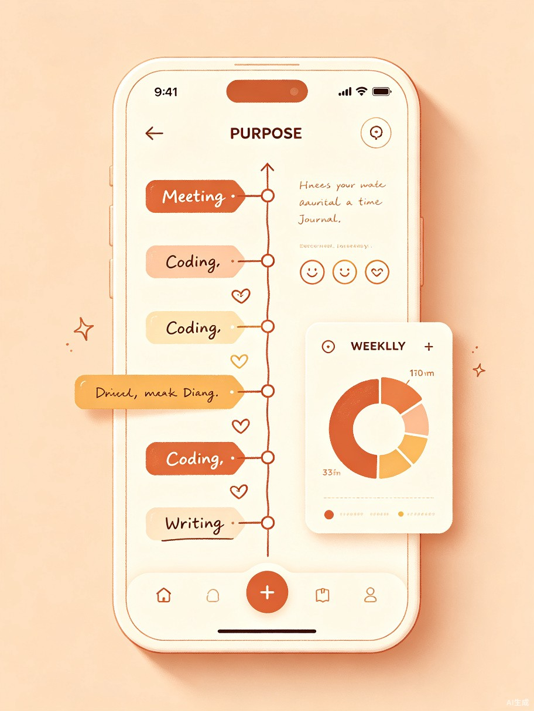

打工人专属的工作手账
用五分钟记录一天，让每一份努力都有迹可循
手账美学 × 工作管理，让记录成为一种治愈体验
日常工作琐事零散、复盘困难，长期处于"忙了一天却不知干了什么"的状态，缺乏对工作节奏的掌控感。大脑记忆不可靠，纸质记录难搜索，效率工具又太冰冷。
看到身边同事用纸质手账记录工作，但查找不便、无法统计分析；而纯效率工具又缺乏温度，久而久之便放弃。于是萌生了将手账美学与工作管理结合的想法。
一款面向职场人的小程序 + App，以时间轴手账为核心载体，融合工作记录、智能复盘与数据看板，让每一次记录都充满仪式感。
精准定位三类核心用户，深入理解他们的真实困境
不止于记录，更是对工作方式的深度优化
"每天5分钟，告别周报焦虑"
通过每日轻量记录，用户可自动生成工作周报 / 月报，省去回忆和整理的时间，让复盘成为习惯而非负担。数据看板直观呈现时间分配，帮助识别低效环节，持续优化工作方法。
六大核心功能，打造有温度的工作手账体验
提供多种精美手账模板，让记录本身成为一种治愈体验。支持图文混排、贴纸装饰，告别冰冷的表格录入。每一条记录都是时间轴上的一颗珍珠，串联起完整的一天。

支持自定义标签（如"开会""coding""写作"），自动生成时间分布饼图，让时间花在哪一目了然。
强大的全文检索功能，输入关键词即可秒级定位历史记录，告别翻找的烦恼。
一键生成精美的周报 / 月报 PDF，排版优雅，直接提交给老板，省时又专业。
记录每天的工作心情，长期追踪工作状态变化，及时发现倦怠信号，关爱职场心理健康。
手机、电脑、平板多端实时同步，随时随地记录和查阅，数据安全永不丢失。
可视化呈现周 / 月 / 季度的工作趋势，帮助你科学规划时间、提升效率。
迹录 — 不只是工作记录工具，更是你的职场成长伙伴
JiLu · Trace Your Work